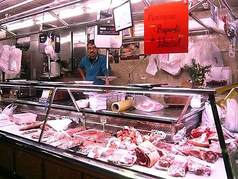
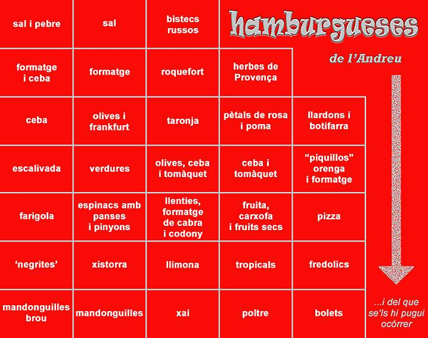
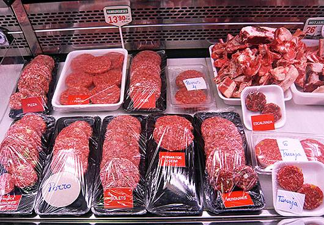

A
.
Hernàndez
'Marilí'

.
carnissers
carns de :
·
vedella
·
bou
·
poltre
·
cabrit
·
xai
Taller d'Hamburgueses creatives a L'Harmonia
: inici dijous 28 d'abril 2016

especialitat en pre-cuinats
i en l'el
·
laboració al moment
de
.
enorme
varietat
d'hamburgueses

plaça
Mercadal
,
Mercat
de
Sant
Andreu
,
parades
núm
.
10
i
11
933 450 398
630 837523
Sant Andreu de Palomar
(08030 BCN)
Tornar